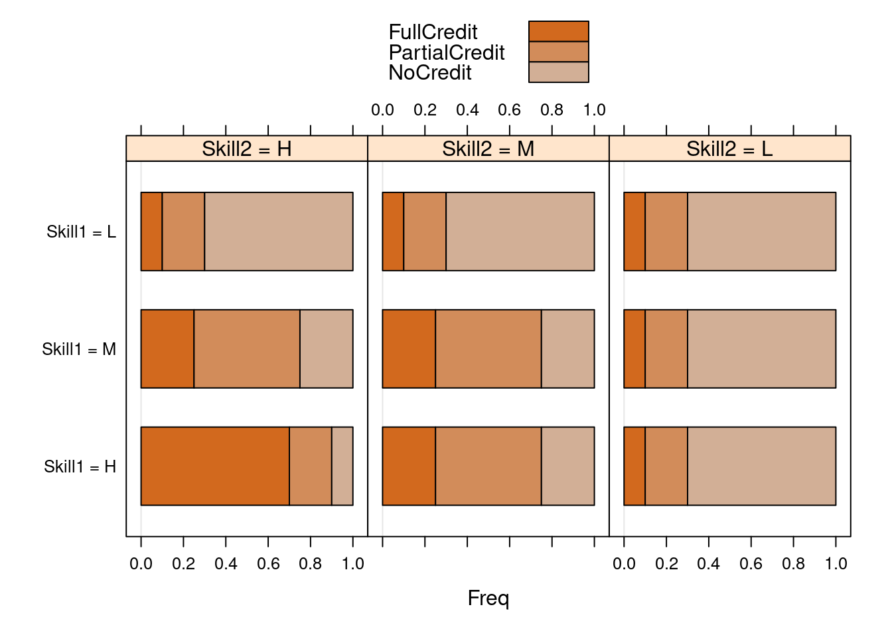

Node that in RNetica the [] operator can be used to access the CPT of a node.
Conditional Probability Table
Skill2 has one parent, so conditional CPT.
Skills[[2]][]
Skill1 Skill2.H Skill2.M Skill2.L
1 H NA NA NA
2 M NA NA NA
3 L NA NA NA
Multiple Parents
CRItem has two parents, for total of nine (3x3) rows.
CRItem[]
Skill1 Skill2 CRItem.FullCredit CRItem.PartialCredit CRItem.NoCredit
1 H H NA NA NA
2 M H NA NA NA
3 L H NA NA NA
4 H M NA NA NA
5 M M NA NA NA
6 L M NA NA NA
7 H L NA NA NA
8 M L NA NA NA
9 L L NA NA NA
The [<- operator for NeticaNodes
RNetica maps the assignment operator for [] ([<-) to provide a wide variety of behaviors.
Both [ and [<- allow the user to specify a specific row or cell, or group of rows and cells. This is similar, but not quite the same as the [ operator behavior for matrixes and data frames.
Skill1 Skill2 CRItem.FullCredit CRItem.PartialCredit CRItem.NoCredit
1 H M 0.25 0.5 0.25
2 M M 0.25 0.5 0.25
3 L M 0.25 0.5 0.25
CRItem["M",]
Skill1 Skill2 CRItem.FullCredit CRItem.PartialCredit CRItem.NoCredit
1 M H 2.500000e-01 5.000000e-01 2.500000e-01
2 M M 2.500000e-01 5.000000e-01 2.500000e-01
3 M L -3.396031e+38 -3.396031e+38 -3.396031e+38
Skill1 Skill2 CRItem.FullCredit CRItem.PartialCredit CRItem.NoCredit
1 H H 0.70 0.2 0.10
2 M H 0.25 0.5 0.25
3 L H 0.10 0.2 0.70
4 H M 0.25 0.5 0.25
5 M M 0.25 0.5 0.25
6 L M 0.10 0.2 0.70
7 H L 0.10 0.2 0.70
8 M L 0.10 0.2 0.70
9 L L 0.10 0.2 0.70
Conditional Probability Frames and Conditional Probability Arrays
When there are two or more parent variables, there are two possible views of the CPT:
Conditional Probability Frame (CPF) which is a data frame where rows represent configurations of parent variables.
First \(p\) columns represent parent configuration
Last \(|States|\) columns represent child states.
Numeric part is the conditional probability table
Note: calcXXXFrame() and calcXXXTable() methods in CPTtools
CPFs can be used on the RHS of [<- operator for NeticaNodes, to set the CPT.
Array view
Conditional Probability Array (CPA) which is \(p+1\) dimenional array.
The functions as.CPF and as.CPA convert back and forth between the two views:
as.CPA(CRItem[])
, , CRItem = FullCredit
Skill2
Skill1 H M L
H 0.70 0.25 0.1
M 0.25 0.25 0.1
L 0.10 0.10 0.1
, , CRItem = PartialCredit
Skill2
Skill1 H M L
H 0.2 0.5 0.2
M 0.5 0.5 0.2
L 0.2 0.2 0.2
, , CRItem = NoCredit
Skill2
Skill1 H M L
H 0.10 0.25 0.7
M 0.25 0.25 0.7
L 0.70 0.70 0.7
attr(,"class")
[1] "CPA" "array"
Graphing a conditional probability table.
The function barchart.CPF (which extends the lattice function barchart) will build a visualization of the CPF.
The baseCol argument can be any R color specification, it is then used as the base color for the graph.
Barchart
barchart.CPF(CRItem[],baseCol="chocolate")

How far have we come?
The [] function for NeticaNodes is a very convenient way for accessing and manipulating CPTs
It uses a data-frame representation, the CPF
If we can make a CPF, we can set the table for a node.
The package CPTtools is all about making CPFs!
The DiBello Models
A Short History
When building CPT for Biomass, Lou DiBello had an idea.
Map each row of the CPT onto an effective Theta
Then use IRT model (Samejima’s Graded Response) to calculate CPTs for each row.
For multivariate parents, use a structure function or combination rule to combine indivitual effective thetas for each parent into a single effective theta.
Compensatory: (weighted) average of parents
Conjunctive: minimum of parents
Disjunctive: maximum of parents
The DiBello procedure: Effective Thetas
1 Map the states of the parent variables onto the standard normal (theta) scale.
effectiveThetas(2)
[1] 0.6744898 -0.6744898
effectiveThetas(3)
[1] 0.9674216 0.0000000 -0.9674216
effectiveThetas(4)
[1] 1.1503494 0.3186394 -0.3186394 -1.1503494
Setting Effective Thetas
The function PnodeStateValues() sets the effective Thetas for a node.
The function ParentNodeTVals() fetches the effective Thetas for the
2 Combine the parent variables using a combination rule to create a single effective theta for each row.
+ The combination rule generally has slope (discrimination)
parameters ($\alpha$'s or $a$'s)
+ The combination rule generally has difficulty (intercept)
parameters ($\beta$'s or $b$'s)
+ Some rules (e.g., `Compensatory`) have multiple-a's, some (e.g.,
`OffsetConjuctive`) have multiple-b's
+ Some link functions allow (or even require) different b's for
each state of the child variable (step difficulties).
+ The partial credit link function allows different a's as well.
DiBello Procedure 3:
3 Convert the effective thetas to conditional probablities using a link function (IRT-like models)
+ `gradedResponse` -- Lou's original suggestion
+ `partialCredit` -- More flexible alternative
+ `normalLink` -- Regression-like model for proficiency variables.
- Requires a _link scale parameters_
The function calcDPCFrame in the CPTtools package does the work. (DPC = Discrete Partial Credit)
Mapping Parent States onto the Theta Scale
Effective theta scale is a logit scale corresponds to mean 0 SD 1 in a “standard” population.
Want the effective theta values to be equally spaced on this scale
Want the marginal distribution implied by the effective thetas to be uniform (unit of the combination operator)
*What the effective theta transformation to be effectively invertible (this is reason to add the 1.7 to the IRT equation).
Equally spaced points in Normal Measure
Assume variable has \(M\) states: \(0, \ldots, M-1\)
Region \(m\) will have lower bound \(m/M\) quantile and upper bound at \((m+1)/M\) quantile.
Midpoint will be at \((m+\frac{1}{2})/M\) quantile
## We will need this for building CPTs later.PnodeStateValues(Skills[[1]]) <-effectiveThetas(PnodeNumStates(Skills[[1]]))PnodeStateValues(Skills[[2]]) <-effectiveThetas(PnodeNumStates(Skills[[2]]))
Combination Rules
Compensatory – more of one skill compensates for lack of another
Inhibitor – minimum threshold of Skill 1 needed, then Skill 2 takes over (special case of conjuctive) Multi-b rules:
OffsetConjunctive – like conjunctive model, but with separate \(b\)’s for each parent instead of separate \(a\)’s
Offset Disjunctive – like disjunctive rule, but with separate \(b\)’s for each parent instead of separate \(a\)’s.
Compensatory Rule
Weighted average of inputs
One \(\alpha\) (slope) for each parent variable (\(k\)) and state (\(s\)): \(\alpha_{k,s}\)
One \(\beta\) (difficulty) for each state of the child variable (except the last): \(\beta_s\)
\[ \tilde\theta = \frac{1}{\sqrt{K}} \sum_k \alpha_{k,s}\tilde\theta_{k,m_k} - \beta_s\] * Factor \(1/\sqrt{K}\) is a variance stabilization term. (Make variance independent of number of parents.)
Conjunctive and Disjunctive Rules (Multi-a)
Replace sum (and square root of K) with min or max
Conjunctive: All skills needed; weakest skill dominates
Skill1 Skill2 Skill1.theta Skill2.theta Effective.theta
1 H H 0.9674216 0.9674216 1.3681407
2 M H 0.0000000 0.9674216 0.5472563
3 L H -0.9674216 0.9674216 -0.2736281
4 H M 0.9674216 0.0000000 0.8208844
5 M M 0.0000000 0.0000000 0.0000000
6 L M -0.9674216 0.0000000 -0.8208844
7 H L 0.9674216 -0.9674216 0.2736281
8 M L 0.0000000 -0.9674216 -0.5472563
9 L L -0.9674216 -0.9674216 -1.3681407
Try changing the slopes and intercepts
Offset Style Rules:
Almost the same, except now we expect beta to be a vector instead of alpha.
Skill1 Skill2 Skill1.theta Skill2.theta Effective.theta
1 H H 0.9674216 0.9674216 0.4674216
2 M H 0.0000000 0.9674216 -0.5000000
3 L H -0.9674216 0.9674216 -1.4674216
4 H M 0.9674216 0.0000000 0.4674216
5 M M 0.0000000 0.0000000 -0.5000000
6 L M -0.9674216 0.0000000 -1.4674216
7 H L 0.9674216 -0.9674216 -0.4674216
8 M L 0.0000000 -0.9674216 -0.5000000
9 L L -0.9674216 -0.9674216 -1.4674216
Try changing the slopes and intercepts, and changing the rule for OffSetDisjunctive
Link Functions
Graded Response Model
Normal (Regression) Model
Partial Credit Model
2PL (Special case of graded response or partial credit)
Graded Response model
Models \(\Pr(X \ge s)\)
Probabilities are differences between curves
To keep the curves from crossing, discrimination parameters must be the same for all \(s\)
PnodeLink(node) <-"gradedResponse"
Normal (Regression) model
Effective theta is mean predictor
Add a residual variance (link scale parameter)
Calculate probabilities that value falls into certain regions
Evaluate Samejima’s graded response model at the effective theta values.
Theta State2 State1 State0
Low -1.8 0.057 0.253 0.690
Med -0.4 0.198 0.448 0.354
High 1.0 0.500 0.381 0.119
Representing Graded Response Models in Peanut
Peanut is a framework that allows us to attach the parameters to nodes in the graph.
PNetica implements this for NeticaNode objects
PnodeLink(node) accesses the link function
Should have value “gradedResponse” for graded response models.
PnodeRules(node) accesses the rules.
For now, stick to multiple-a types: Compensatory, Conjunctive and Disjunctive.
Setting the parameters
PnodeLnAlphas(node) or PnodeAlphas(node) gives the slope parameters.
This should be a vector which components corresponding to the parents.
In general, vectors are used to represent multiple parents.
PnodeBetas(node) gives the difficulty parameters.
This should be a list with one fewer elements than there are states (the last state is used for normalization).
In general, lists are used to represent multiple states.
Building the Table
BuildTable(node) builds the table.
PnodeStateValues of parents need to be set.
PnodePriorWeight (used in learning algorithm) needs to be set.
CRItem <-Pnode(CRItem) ## Force into Pnode protocol.PnodeLink(CRItem) <-"gradedResponse"PnodeRules(CRItem) <-"Compensatory"PnodeAlphas(CRItem) <-c(1.2,.8)PnodeBetas(CRItem) <-list(.25, -.25)PnodePriorWeight(CRItem) <-10## Used for learningcalcDPCFrame(ParentStates(CRItem),PnodeStates(CRItem),PnodeLnAlphas(CRItem),PnodeBetas(CRItem),PnodeRules(CRItem),PnodeLink(CRItem))
Skill1 Skill2 FullCredit PartialCredit NoCredit
1 H H 0.86998648 0.06997425 0.06003927
2 M H 0.62371241 0.17128816 0.20499942
3 L H 0.29107519 0.19888420 0.51004061
4 H M 0.72521985 0.13540669 0.13937347
5 M M 0.39532092 0.20935817 0.39532092
6 L M 0.13937347 0.13540669 0.72521985
7 H L 0.51004061 0.19888420 0.29107519
8 M L 0.20499942 0.17128816 0.62371241
9 L L 0.06003927 0.06997425 0.86998648
Egon Spengler: There’s something very important I forgot to tell you.
Peter Venkman: What?
Egon: Don’t cross the streams.
Venkman: Why?
Egon: It would be bad.
Venkman: I’m fuzzy on the whole good/bad thing. What do you mean, “bad”?
Egon: Try to imagine all life as you know it stopping instantaneously, and every molecule in your body exploding at the speed of light.
Ray Stantz: [shocked gasp] Total protonic reversal.
Venkman: Right. That’s bad. Okay. All right. Important safety tip. Thanks, Egon.
Ghostbusters
Graded Response when the curves cross
Actually, not as bad as crossing the proton beams, can produce negative probabilities.
CPTtools corrects, but still puts restrictions on parameters.
In particular, must have a common discrimination for all states of the child variable to ensure curves don’t cross.
Downside of Graded Response Model
Need to keep curves from crossing restricts discrimination parameter
In Physics Playground (v. 1) for some levels difference between Silver trophy and Gold trophy had more evidence (higher discrimination) than difference between Silver and none
All steps must have the same parent variables and the same combination rule.
Models probility of achiving certain level of performance, not step between levels.
Generalized Partial Credit (GPC) model does not have these downsides.
Note Graded Response and GPC are the same when child variable has only two states.
Normal (Regression) Model
As with effective theta transformation, start by dividing theta region up into equally spaced intervals
Calculate offset curve:
mean is effective theta
SD, \(s\), is link scale parameter *Conditional probabilities:
area under curve between cut points
Low Medium High
0.1223318 0.3431666 0.5345016
Normal Link (Regression Model) features
Link function is inverse of the mapping from states to effective thetas
Rounding error, but no scale distortion
Good for proficiency variables
Can be used for no parent case.
Often better to use intercept (negative difficulty) rather than difficulty.
Can use \(R^2\) instead of the link scale parameter, \(\sigma\)
Note: Latent (tetrachoric) correlations, not observed score correlations
Can use factor analysis output to get model structure and parameters (Almond, 2010)
Normal Link: No Parent case
PnodeLink(node) is now “normalLink”
Now need PnodeLinkScale(node), residual standard deviation (\(\sigma\))
Rule doesn’t matter, use PnodeRules(node)="Compensatory"
Should be only one PnodeBeta(node)
Skill1 <-Pnode(Skills[[1]]) ## Force into Pnode protocol.PnodeLink(Skill1) <-"normalLink"PnodeLinkScale(Skill1) <- .8PnodeRules(Skill1) <-"Compensatory"PnodeAlphas(Skill1) <-numeric()PnodeBetas(Skill1) <-list(.25)PnodePriorWeight(Skill1) <-10## Used for learningBuildTable(Skill1)
WARN [2023-04-11 10:54:12] Alpha vector for node Skill1 is empty.
Now need PnodeLinkScale(node), residual standard deviation (\(\sigma\))
Works best with PnodeRules(node)="Compensatory"
Should be only one PnodeBeta(node)
Skill2 <-Pnode(Skills[[2]]) ## Force into Pnode protocol.PnodeLink(Skill2) <-"normalLink"PnodeLinkScale(Skill2) <- .6PnodeRules(Skill2) <-"Compensatory"PnodeAlphas(Skill2) <-c(.8)PnodeBetas(Skill2) <-list(-.25)PnodePriorWeight(Skill2) <-10## Used for learningBuildTable(Skill2)calcDPCFrame(ParentStates(Skill2),PnodeStates(Skill2),PnodeLnAlphas(Skill2),PnodeBetas(Skill2),PnodeRules(Skill2),PnodeLink(Skill2),PnodeLinkScale(Skill2))
Skill1 H M L
1 H 0.83859093 0.1537431 0.007665989
2 M 0.38162636 0.4900907 0.128282900
3 L 0.05579268 0.3824800 0.561727270
Observable variable takes on states \(0, \ldots, S\)
Model transition probabilities:
\[P_{s|s-1}(\tilde{\bf \theta}) = \Pr(X \ge s | X \ge s-1, \tilde{\bf \theta}) =
{\rm logit}^{-1} 1.7 Z_s(\tilde{\bf \theta}) \]
Define \(Z_0()=0\).
\(Z_s()\) can vary will \(s\):
Different parameters
Different functional forms
Can easily switch between multi-a and multi-b combination rules
Can use only a subset of the parents!
Need to define combination rule and parameters for each state (except state 0).
PnodeLnAlphas,PnodeBetas and PnodeRules are now lists (one element per state)
Partial Credit Link:
Probability of \(X\) being in state \(s\) is:
\[\Pr(X = s | \tilde{\bf\theta}) = \frac{\prod_{r=0}^s P_{r|r-1}(\tilde{\bf\theta})}{C}, \]
where \(C\) is a normalization constant.
Can convert the products to sums
\[\Pr(X = s | \tilde{\bf\theta}) = \frac{\exp\left(1.7\sum_{r=0}^s Z_r(\tilde{\bf\theta})\right)}{\sum_{R=0}^S \exp\left(1.7\sum_{r=0}^R Z_r(\tilde{\bf\theta})\right)}\]
Simple Case 1: Multiple-A rules
These look a lot like graded response
PnodeLink(pnode) = "partialCredit"
PnodeRules(pnode) is a single value
“Compensatory”, “Conjunctive”, “Disjunctive”
PnodeLnAlphas(pnode) is a vector corresponding to parents
PnodeBetas(pnode) is a list corresponding to states.
\(Z_s()\) has the same functional form and the same parameters except for \(b\)’s
Use CompensatoryGadget to edit this style table.
Simple Case: Example
CRItem <-Pnode(CRItem) ## Force into Pnode protocol.PnodeLink(CRItem) <-"partialCredit"PnodeRules(CRItem) <-"Compensatory"PnodeAlphas(CRItem) <-c(1.2,.8)PnodeBetas(CRItem) <-list(.25, -.25)PnodePriorWeight(CRItem) <-10## Used for learningBuildTable(CRItem)calcDPCFrame(ParentStates(CRItem),PnodeStates(CRItem),PnodeLnAlphas(CRItem),PnodeBetas(CRItem),PnodeRules(CRItem),PnodeLink(CRItem))
Skill1 Skill2 FullCredit PartialCredit NoCredit
1 H H 0.862821165 0.1289427 0.008236118
2 M H 0.568546469 0.3430058 0.088447725
3 L H 0.167478982 0.4079015 0.424619527
4 H M 0.694323128 0.2630736 0.042603245
5 M M 0.283318992 0.4333620 0.283318992
6 L M 0.042603245 0.2630736 0.694323128
7 H L 0.424619527 0.4079015 0.167478982
8 M L 0.088447725 0.3430058 0.568546469
9 L L 0.008236118 0.1289427 0.862821165
PnodeLnAlphas(pnode) is a list corresponding to states
PnodeBetas(pnode) is a vector corresponding to parent.
\(Z_s()\) has the same functional form and the same parameters except for \(b\)’s
Use OffsetGadget to edit this style table.
Case 2 example
CRItem <-Pnode(CRItem) ## Force into Pnode protocol.PnodeLink(CRItem) <-"partialCredit"PnodeRules(CRItem) <-"OffsetDisjunctive"PnodeAlphas(CRItem) <-list(1.2,.8)PnodeBetas(CRItem) <-c(.25, -.25)PnodePriorWeight(CRItem) <-10## Used for learningBuildTable(CRItem)calcDPCFrame(ParentStates(CRItem),PnodeStates(CRItem),PnodeLnAlphas(CRItem),PnodeBetas(CRItem),PnodeRules(CRItem),PnodeLink(CRItem))
Skill1 Skill2 FullCredit PartialCredit NoCredit
1 H H 0.90960164 0.0759038 0.01449456
2 M H 0.90960164 0.0759038 0.01449456
3 L H 0.90960164 0.0759038 0.01449456
4 H M 0.75835519 0.1754952 0.06614958
5 M M 0.49311841 0.2961154 0.21076617
6 L M 0.49311841 0.2961154 0.21076617
7 H L 0.75835519 0.1754952 0.06614958
8 M L 0.19980267 0.3327296 0.46746769
9 L L 0.05957531 0.2574386 0.68298611
will be a vector or scalar according to corresponding rule.
PnodeBetas(node) is also a list
elements correspond to states
will be a vector or scalar according to corresponding rule.
Peanut convention: Lists versus Vectors
A list corresponds to states of child variable (except last)
If a vector or scalar shows up where a list is expected, the same value is used for all states.
A vector (within a list) corresponds to parents
Could eliminate some parents (0 alpha, or infinite beta)
Or use inner (node specific) \(Q\)-matrix
Example: Math Word Problem
Based on unpublished analysis by Cocke and Guo (personal communication 2011-07-11)
Next Generation Sunshine State Standards Benchmark, MA.6.A.5.1, “Use equivalent forms of fractions, decimals, and percents to solve problems” (NGSSS, 2013)
Sample problem:
John scored 75% on a test and Mary has 8 out of 12 correct on the same test. Each test item is worth the same amount of points. Who has the better score?
Scoring Rubric
State
Description
Skills
No Credit
Null response
N/A
———–
————————
——————
Partial
Recognizes 75% and
Mathematical
Credit 1
8/12 as key elements
Language
———–
————————
——————
Partial
Converts two fractions
Convert
Credit 2
to a common form
Fractions
———–
————————
——————
Full
Makes the correct
Compare Fractions
Credit
comparison
& Math Lang.
———–
————————
——————
Model Refinement
Collapse “Partial Credit 2” and “Full Credit”
Few “Partial Credit 2”’s in practice
Skill1 = Mathematical Language
Skill2 = Convert Fractions and Compare Fractions
Fraction Manipulation
Need two combination rules
No Credit -> Partial Credit. Only one skill relevant.
Can use any rule (“Compensatory” is default choice)
Partial Credit -> Full Credit.
Conjunctive model: both skills needed.
Less of Skill1 than of Skill2
Inner Q-matrix
Q-matrix inside node:
Rows are state transitions
Columns are skills (parent variables)
Skill1
Skill2
Rule
Partial
1
0
Compensatory
———
——–
——–
————–
Full
1
1
Conjunctive
———
——–
——–
————–
The function PnodeQ(node) allows setting the node level Q-matrix.
PnodeQ(node) = TRUE implies all 1’s in Q-matrix.
Complex Example
Now use function DPCGadget() to edit with full model.
CRItem <-Pnode(CRItem) ## Force into Pnode protocol.PnodeLink(CRItem) <-"partialCredit"PnodeRules(CRItem) <-list("Compensatory","OffsetDisjunctive")PnodeAlphas(CRItem) <-list(c(Skill1=1),1)PnodeBetas(CRItem) <-list(-1,c(Skill1=-1,Skill2=1))PnodeQ(CRItem) <-matrix(as.logical(c(1,0,1,1)),2,2,byrow =TRUE)PnodePriorWeight(CRItem) <-10## Used for learningcalcDPCFrame(ParentStates(CRItem),PnodeStates(CRItem),PnodeLnAlphas(CRItem),PnodeBetas(CRItem),PnodeRules(CRItem),PnodeLink(CRItem),Q=PnodeQ(CRItem))
Skill1 Skill2 FullCredit PartialCredit NoCredit
1 H H 0.9647686 0.03403099 0.00120040
2 M H 0.8223300 0.15022614 0.02744384
3 L H 0.3519553 0.33299278 0.31505193
4 H M 0.9647686 0.03403099 0.00120040
5 M M 0.8223300 0.15022614 0.02744384
6 L M 0.3519553 0.33299278 0.31505193
7 H L 0.9647686 0.03403099 0.00120040
8 M L 0.8223300 0.15022614 0.02744384
9 L L 0.3519553 0.33299278 0.31505193